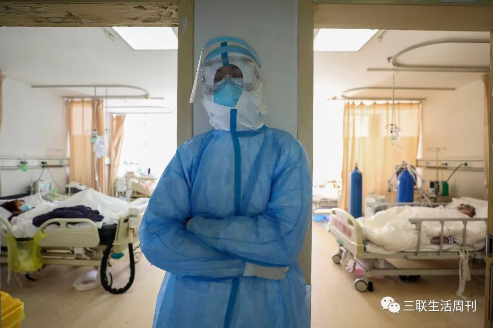
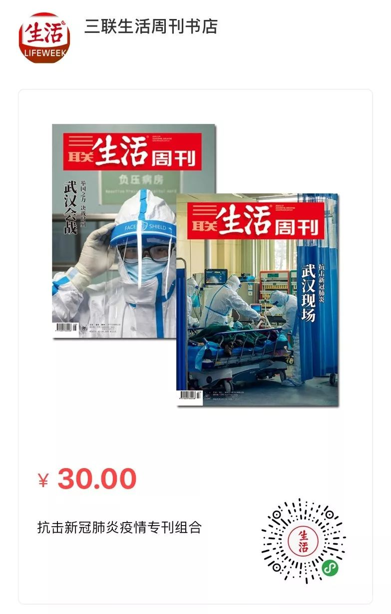
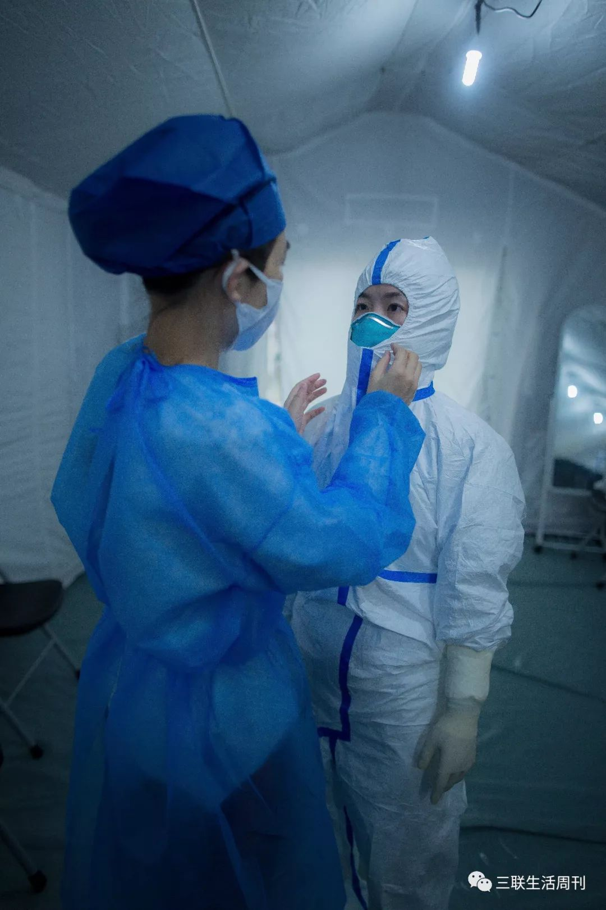
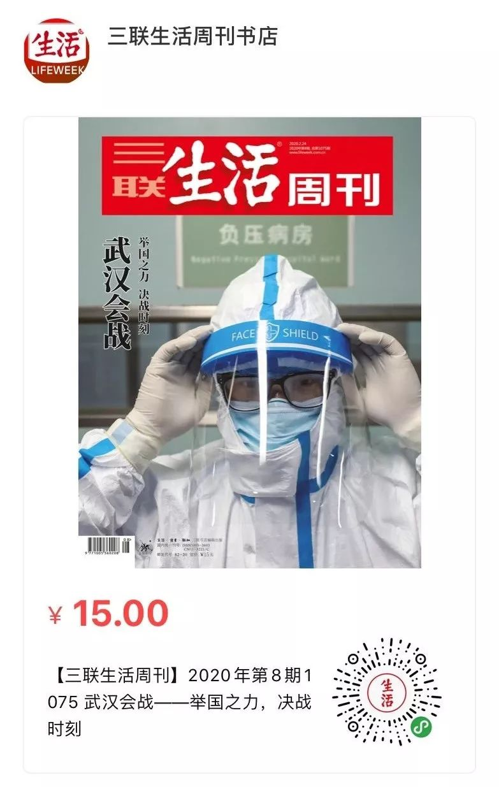

武汉10万床位待命：从居家隔离到集中隔离的艰难纠偏
原文链接 备份链接 武汉封城之初遇上医疗挤兑，“居家隔离”政策随之推出。但社区资源和能力未匹配，反而加重家庭内部交叉传染。这是武汉病例此后暴增的主要原因。 纠错政策姗姗来迟，10天后的2月2日，“居家隔离”变为“集中隔离”。但初期隔离 …
层层战略部署之后，武汉保卫战已经开始。这是一场与病毒和传染源赛跑的立体战役。
要想打赢这场战役，我们需要在时间上，跑在病魔之前，调集重兵，救治患者；在空间上，则要寻遍传染源，斩断传播途径，将其隔离。
《三联生活周刊》第二本**「新冠特刊」来了
**
点击下图，即可线上购买
点击上图，下单新冠特刊「*武汉会战*」
本文记者 | 黄子懿 王梓辉 李秀莉
举国之力
对几乎每一个驰援武汉的人来说，出征号令都来得非常紧急。
1月22日晚，看着武汉不断上升的新型冠状病毒肺炎确诊和重症患者人数，浙江大学附属第一医院重症监护室副主任医师郑霞开始焦急起来。她向领导表示，愿意去武汉支援，“那里一定需要很多重症医生”。23日上午11点，武汉封城一小时后，她就接到国家卫健委的电话：“因为当前疫情紧急，需要您马上到武汉去支援，务必今晚到达。”
郑霞立马收拾东西，下午4点坐高铁从杭州出发，晚上8点到达武汉周边某市，后被直接送至武汉金银潭医院。郑霞对本刊说，从接到任务到出发，只有三四个小时准备。请缨24小时之后，她就从杭州踏上了疫情一线。
**郑霞是最早支援武汉的外地医护人员之一。与她几乎同一时间到达武汉的，还有来自上海、广州、北京等地的重症医学科中坚力量，来此救治金银潭医院收治的新冠肺炎重症患者。他们的到达，是全国驰援武汉的开始。
**

2月14日，医务人员在金银潭医院隔离病房缓冲区呼叫同事。| 远征 摄
一天之后，上海、广东、陆军军医大学等5支首批成规模的医疗队飞抵武汉，四川、浙江、江苏等队伍紧随其后。武汉封城第三日，就有14支队伍、1230名医护人员千里驰援。武汉抗疫也就此成为2008年汶川地震后全国最大的一次支援行动，大批援军进驻，也让精疲力竭的武汉一线医护人员暂时有了片刻喘息。
进入2月后，举国驰援的行动走向高峰，来自全国29个地区的医护人员，以极快的出征速度，将支援范围扩大至整个湖北省。奔赴武汉的包机与高铁专列，在冬日步履不停，火线加速，仅2月8日～14日，就运送了1.3万驰援医护人员。
国家卫健委副主任、湖北省委常委王贺胜说，截至2月14日，全国各地共派出了217支医疗队，25633名医疗队员支援湖北，其中在武汉的有181支队伍，20374名队员，这还不包括军队派出的医疗队。“这些都大大超过了2008年汶川特大地震医疗救援的调动规模和速度。”
“出发得都非常紧急。基本上就是给我们打完电话后，当晚或者第二天一早就得出发，准备时间非常短。”2月4日跟随国家紧急医学救援队来到武汉支援的北京某三甲医院医生莫睿对本刊说，他们当日赶到武汉，所要接手的方舱医院甚至都还没有建好，但所有医护队伍都要待命。**医院和患者尚未就位，前来驰援的医护队伍已然先到。
**

2月17日，在武汉市红会医院重症隔离病区，一名劳累的护士在病房外靠着墙闭眼小憩。| 远征 摄
举国驰援的背后，是武汉自2月初启动的“应收尽收”攻坚战。主战场的主阵将帅进行了相应人事调整，中央政法委秘书长陈一新担任中央指导组副组长，国家卫建委副主任王贺胜担任湖北省委常委。中央指导组下达“应收尽收、刻不容缓”的命令，要求武汉对“四类人员”（确诊患者、疑似患者、无法排除感染可能的发热患者、确诊患者的密切接触者）进行分类集中收治隔离，15家方舱医院先后启动，武汉市3000余个社区、村落被动员起来，挨家挨户排查。武汉从“封住城”，迈向了“锁住人”。
与此同时，被人诟病的繁琐严苛的诊断标准下调，具有肺炎影像学特征的疑似患者以临床诊断病例纳入确诊名单。大批存量患者的释放，让2月12日湖北省新增病例一度暴涨至14840例，其中临床诊断病例13332例。此前摸不透看不清的疫情底数，首次直接明晰地展现在公众面前。
“现在国家抗击疫情的态度已经很明确了，就是要把方方面面的资源都调动起来，所有人形成合力来做这件事，这是最关键的。”上海市第二批援鄂医疗队队长、瑞金医院副院长陈尔真对本刊说，当前武汉的患者过多，其本身资源已很难应付这场战役，只有以举国之力，方可力拼一胜。武汉抗疫，也是一场全民抗疫。
前中国疾控中心副主任杨功焕向本刊分析道，如果把武汉封城算作抗疫的第一节点，那么“当下是进入第二个关键节点了”。在第一节点内，疫情仍在蔓延、形势愈发严峻，必须调整策略，加大驰援力度，救治已有患者，增加防控力度。
这是历史上从未有过的对决，举国之力对决超级疫情。而当前，正是决战的关键时刻。“可以说到了最吃紧的时候，是一种胶着对垒的状态。”国家卫健委疫情应对处置工作专家组组长梁万年说。
鏖战之下，中央指导组于2月14日下达命令：发起武汉保卫战、湖北保卫战全面总攻。“湖北、武汉是全国打赢疫情防控阻击战的决胜之地。武汉胜，则湖北胜；湖北胜，则全国胜。”
重症攻坚
“现在正是决战时刻，而不是决胜时刻。”陈尔真认为，从决战到决胜，关键在于坚持分类集中的原则，“集中患者、集中专家、集中资源和集中救治”。他带领的团队支援武汉市第三医院光谷院区，主要负责救治重症患者。
疫情中心的武汉，让人关注的不仅有3万多的确诊病例，还有显著高于全国其他地区的重症率与病死率。截至2月15日，武汉的重症病例为8530例，占确诊病例（35314例）的24.2%，病死率为2.96%，均高于湖北和全国。
国家卫健委医政医管局副局长焦雅辉对外解释，这是因为武汉最初只有3家重症患者定点医院，床位共110多张，严重不足。大量重症患者分散在20多家医疗机构，不利于管理，更不是由重症医学科的专业医疗团队进行救治，“这在一定程度上摊薄了优质医疗资源的力量，也是导致重症患者病死率比较高的因素”。

1月底，武汉大学中南医院急救中心接收的新冠肺炎重病号。| 蔡小川 摄
很难想象，疫情面前捉襟见肘的武汉，本是全国人均医疗资源最丰富的地区之一。据官方统计，武汉市有三甲医院27家，每百万人拥有的三甲医院数量（2.44）名列全国第六。同时武汉高校众多，人均优质医疗资源更丰富。
然而在医疗体系内，重症监护室（ICU）本是稀有资源。以武汉综合实力较强的武汉协和医院为例，其官网介绍，医院ICU床位只有55张。协和医院西院一位医生在微博上表示，其院区在疫情之初都没有ICU，却收治了很多重症病人。后来开放了20张ICU床位，很快就住满，每天有10～20位病人病危却转不进ICU，一些病人在等待中离去，这对医护人员打击很大。
焦雅辉则透露，武汉疫情持续时间长，很多病例之前未得到及时救治，重症病例从发病到住院平均9.84天，错失最佳时机，在等待过程中由轻症变重症。
为此，国家卫健委在2月4日强调，要把重症患者“集中救治”，将医疗资源和专家集中。在原有3所定点医院基础上，新开设武汉协和医院西院区、同济医院中法新城院区和武汉大学人民医院东院区，计划收治1000名重症患者，病房由从全国抽调的精锐重症团队整建制接管。截至2月17日，全国29个地区共派往湖北的3.2万名外地支援人员中，有1.1万名是重症专业的医生和护士，接近全国重症医务人员资源10%。

2月6日，武汉市蔡甸区人民医院隔离病房内，一名患者正在接受治疗。| 远征 摄
2月3日，决定集中收治重症患者的前一天，作为首批到达武汉的重症专家，郑霞参加了国家卫建委的紧急会议，会议后，她与其他几位重症专家受命去武汉各定点医院评估需要转运的重症患者。郑霞走访了黄陂区、青山区的8家医院，看到“重症病人非常多”，也有很多病人根本无法收进来。
“所有医生都很着急。”郑霞对本刊说，很多定点医院并没有相应抢救条件，因为平日这些医院不会有很多需要氧疗和呼吸机的重症病人，但在应急时期却不得已收治了很多。因条件所限，这些病人的病程被拖长，积压院内，院外则有大量病人收不进来，滞留在家，“所以这些医院的压力是非常大的”。
重症患者的积压也跟救治难度有关。“病情变化非常琢磨不定，有时候会迅速恶化。”郑霞说，新冠病毒狡猾，病情会在一个相对稳定时期后突然加速恶化。比如上午一个病人情况似乎很稳定，晚上就可能在一次突然的高热甚至呼吸窘迫后，需要上呼吸机纯氧支持，乃至有创气管插管，“处理起来真的非常棘手”。
这与郑霞当年参与抢救禽流感重症患者很不一样。“‘甲流’在我们医院有一个比较高的救治率，那一批病人我们发现其实只要把他的肺用ECMO（体外膜氧合，又称‘人工肺’）撑住，很多病人慢慢养着，等肺功能修复，就能一步步熬过来。”郑霞说，这次病情恶化的速度和程度远甚于甲流时期。曾参与过SARS重症病人救治的陈尔真则表示，新冠病毒肺炎总体病死率比SARS低，但重症患者不仅有严重的肺损伤，而且会波及其他器官，进而引发人体多器官衰竭。
这种情况下，重症专家们在ICU里的主要工作，就是尽一切可能维持患者呼吸、减少其他脏器损伤，去赢得一个时间窗口，等待患者自身免疫力的恢复。这些手段包括氧疗、经鼻高流量氧疗、无创机械通气、有创机械通气、ECMO等功能支持手段。“目前还没有特效药。”郑霞强调。

2月13日，金银潭医院隔离病房内忙碌的医护人员。| 远征 摄
对重症患者的集中收治，医疗设备与资源就是武器，就像战场上冲锋的将士，离不开机枪与弹药。其中氧气是必需品，但很多外地团队都在武汉遇到过供氧和设备难题。后期到来的驰援力量，都加强了这方面的准备，带上了呼吸机、制氧机、ECMO等设备。
然而，并非所有重症病人能如愿转院到新开的重症集中收治点。郑霞说，当时的筛查评估只集中于确诊病人，也会考虑转院风险。“筛查方向主要是已往重症方向发展，但能转运的病人。”郑霞说，危重病人转运会有很高风险，不在转院之列。所以重症救治，越早越好，防止病情从重症恶化为危重。
“早期的救治非常关键，否则会加重疾病进展。”陈尔真强调“早”，这不仅体现在重症治疗中，也关乎整个抗疫进程。由于重症救治需要大量人员与资源，当前还需将战线前移，建立普通患者进展为重症的早期识别和预警体系，确保有效干预，同时在防控中还要做到“早发现、早隔离、早治疗”。

扫描小程序，下单新冠肺炎专刊组合
战线前移
然而，武汉已错过“早”的时间点，在疫情之初，在封城之后。杨功焕说，眼下的“应收尽收”其实代表着武汉封城后早期所采取的策略的失败，传染源一直没有被控制，当地甚至一度处在“很无序的状态中”。
防治传染病的主要策略有三步：发现并控制传染源、切断传播途径、救治患者。如果将武汉抗疫看作一个战场，那么集中救治重症病人更像是集中兵力挖战壕、建堡垒，属守势。要想真正歼灭敌人、赢得胜利，则需主动冲锋进攻——救治之外，控制传染源、切断传播途径同样刻不容缓。
封城前后的武汉，最初将7家中小医院作为定点医院，床位不足，后推行分级诊疗，将入院渠道下沉至社区，就医需经层层上报，大量患者滞留在家隔离。2月1日，中国工程院院士、呼吸病学与危重症医学专家王辰考察武汉，发现形势严峻，前期定点医院容量有限，大批患者无法收治而成为移动传染源。王辰说，这是加剧疫情的“最重要的因素”，也是他当时面临的一个很大压力。
这种情况下，方舱医院被提出，用以收治数量更为庞大的轻症病人。方舱医院是一种“移动的诺亚方舟”，借用武汉的大型公共场所，布置简易床位，可解决床位不足的问题，尽管条件并不完善。“这不是‘至善之策’，却是可取之策、现实之策。”王辰说。

2月13日入舱前，医护人员穿戴防护服。| 黄宇 摄
“方舱最重要的功能其实还是隔离。”国家紧急医学救援队的医生莫睿在有1500多张床位的武汉客厅方舱医院工作。他说，方舱医院收治的病人症状很轻，内部条件也有限，无法做复杂检验与治疗，“连输液也不行”。作为医生，他一般只能开些口服药物，更重要的是监测和观察病人的生命体征，“稍微重一点就转走”，确保方舱病人“零死亡”。
莫睿从2月8日起在武汉客厅工作。国家队负责的B厅有400多个床位，方舱初开，就转瞬即满。“病人很多，第一天差点累死。”莫睿说，原本打算首日只收50个病人，但最后来了100多个。
初步问诊后，莫睿发现，很多病人病程较长，来方舱时已有10多天症状。“家庭聚集性感染的很多”，有多对夫妻同时入驻方舱的，“甚至还有一家三口都来的”。在武汉负责帮助求助患者的志愿者付贤说，家庭聚集性感染占到了他所接求助的30%左右。
而方舱医院之外，武汉仍有数量庞大的疑似病例在外徘徊。从防控角度而言，他们都可能是移动的传染源，属“应收尽收”的“四类”人员。2月6日起，中央要求武汉举全市之力上门排查“四类”人员，要求不落一户、不漏一人，将重任落在社区。社区在排查之后，负责将疑似病例安排到隔离点进行隔离。
自此，武汉形成了“金字塔”状的防治体系，重症救治在塔尖，收治轻症的方舱居中，而疑似患者的防控则交至社区，后者成为“金字塔”战阵的数量最为庞大的塔基。

截至2月13日，武汉客厅方舱共有1223名工作人员，包括医生197人，护士839人。其中省外驰援人员1114人。| 黄宇 摄
武汉有1108万常住人口，分布在1287个社区和1883个村湾。自1月24日武汉将入院关口分流至社区后，后者就承受了不亚于医院的压力。不止一个社区出现工作人员因惧怕感染或筛查压力而辞职的现象。成千上万人的排查量，结合着上报、转移、保障生活物资等工作，让社区疲于奔命，防控质量参差不齐。军令之下，依然难免盲区。
武汉东湖区一位社区书记就对本刊表示，只能尽最大努力做到全面排查。“有些人户口在这，但住在别处。这些都叫空挂户，他们不来找我们，我们就不知道他们在哪儿。找不到人就没办法往上报，缺着。还有的人转进来后，只在派出所留有信息。”这些都是工作的盲区。此外，社区工作人员缺乏专业知识和防护设备，也增加了排查难度。
付贤向本刊透露，截至2月14日，他所在的志愿组织收到过574户相关求助信息，被收治入院的仅有171户，占29%。“首先是缺乏床位，其次缺乏转运车辆。”付贤说，这种情况在2月14日之后有了改善，大批求助患者开始被收治入院。因志愿服务繁忙，他暂未统计最新数据，称仍有少量患者没有被收治。2月18日，钟南山院士在新闻发布会表示：“武汉停止‘人传人’，还是一个进行时。”
“与输入地相比，武汉感染者底数还没有完全摸清，蔓延扩散的规模也没有较为精准的估计预测。”2月12日，中央指导组副组长陈一新坐镇武汉疫情防控指挥部，表示武汉潜在被感染的基数可能还比较大。为此，他再次强调研究病床筹集问题，确保“应收尽收”，宁可“病床等人”，不能“病人等床”。

武汉方舱医院医护人员 | 远征 摄
据武汉市疫情防控指挥部介绍，截至2月13日22时，武汉市定点医院床位数为13859张，火神山、雷神山床位数1159张，共计15018张。截至2月14日下午4点，武汉已投入使用的9家“方舱医院”共计床位7600余张，其他方舱在陆续开放中——从数字看，当时的床位数量仍无法满足武汉3万多的确诊病例，“应收尽收”道阻且长。
2月15日，中央指导组再次强调，要千方百计增强收治能力。与此同时，武汉多家医院启动改造，在大批增派驰援医护人员的基础上，几何级地增加床位能力。2月20日前，武汉要储备10万张床位，其中重症床位1.4万，轻症床位3万，集中隔离点5.6万。
背水一战般的动员下，多位志愿者都对本刊表示，“一床难求”的现象正在缓解。付贤和另一位志愿者都说，他们收到的求助已大幅变少。最初时，一天有好几百人求助，现在一天只有十几例，甚至个位数。很多也是求助转院，而非收治。付贤说，“这是前所未见的”。官方数据也显示，在存量被分类释放、收治隔离后，当前新增病例数量、重症率等都呈下降态势。
这是一场与病魔和传染范围赛跑的立体时空战役。层层战略部署之后，总攻命令已经下达，决战一触即发。杨功焕说：“现在谈胜利还为时尚早，也不能说武汉就完全没有死角了，但至少人们的心里更有底了。”
_（文中莫睿、付贤为化名）
_
扫描小程序，即可下单「武汉会战」
欢迎分享至朋友圈

「武汉会战」更多精彩
| 封面故事 |
保卫大武汉：决战时刻（黄子懿 王梓辉 李秀莉）
会师武汉：抢救重症患者（王珊）
方舱“围城”（驳静）
方舱医院的战时效率（驳静）
医院与疾控，疫情时刻的角色再定位（张从志）
张利，独自担责（王海燕）
“大流行”的全球史（刘怡）
**| 社会 |
**
热点：“钻石公主号”海上之困（张洁琼 李晓洁）
调查：谢幕的垃圾填埋场（刘畅）
**| 经济 |
**
**| 文化 |
**
电影：韩国电影，从“忠武路”到好莱坞（宋诗婷）
电影：奉俊昊：奥斯卡的闯入者（宋诗婷）
电影：那些把韩国电影推向世界的导演（张佳婧）
书与人：路内：有时候，小说太乐观（孙若茜）
**| 专栏 |
**
邢海洋：新加坡模式可以借鉴吗？
苗千：量子力学与概率
袁越：非常时期的阴谋论
卜键：《中俄天津条约》的抢签
张斌：曾经消逝的东京奥运会
宋晓军：“5G共识”与“中国优先”
朱德庸：大家都有病
作者档案

**黄子懿
**
做好打持久战的准备
26分钟前


三联生活周刊
个人微博：@杰货

**王梓辉
**
可慢慢而归
26分钟前


三联生活周刊
个人微信：guitumanman
⊙文章版权归《三联生活周刊》所有，欢迎转发到朋友圈，转载开白请联系后台。未经同意，严禁转载至网站、APP等。
点击下图，下单新冠特刊
「武汉会战」
*点击阅读原文，进入周刊书店，**购买**【新冠肺炎专刊组合】*
黄子懿
微信扫一扫赞赏作者 赞赏
长按二维码向我转账
受苹果公司新规定影响，微信 iOS 版的赞赏功能被关闭，可通过二维码转账支持公众号。
文章已于修改
原文链接 备份链接 武汉封城之初遇上医疗挤兑，“居家隔离”政策随之推出。但社区资源和能力未匹配，反而加重家庭内部交叉传染。这是武汉病例此后暴增的主要原因。 纠错政策姗姗来迟，10天后的2月2日，“居家隔离”变为“集中隔离”。但初期隔离 …
原文链接 备份链接 *************▲*************2月18日，青山区工人村街道青和居社区第三网格网格员在挨家排查。 （新华社/图） 全文共8426字，阅读大约需要16分钟。 新建或改造医院的速度，远比不上确诊病 …
原文链接 备份链接 2月17日，湖北省孝感市孝南区妇幼保健院，医护人员在进行体温测量。中青报·中青网见习记者 鲁冲/摄 本文约3780字 预计阅读时间10分钟 口述：四川大学华西医院重症医学科主任 康 焰 整理：中青报·中青网记者 王 …
原文链接 备份链接 中国人均占有的ICU病床数，与西方发达国家相比显然不够。 在ICU人员配备不足的情况下超负荷运转， 就不可避免地将病人置于潜在的危险中 新冠肺炎感染后期，有相当比例的病人出现呼吸衰竭、肾功能衰竭、循环衰竭。重症管理的 …
原文链接 备份链接 图片来源：同济大学附属东方医院 记者：刘素楠 编辑：徐菲 “ 大多数病人都比较稳定，多数患者只需药物治疗甚至可以不服药物。 ” 2月9日下午2点至次日凌晨，武汉客厅方舱医院B区来了百余位患者。他们一批批从大巴上下来，进 …